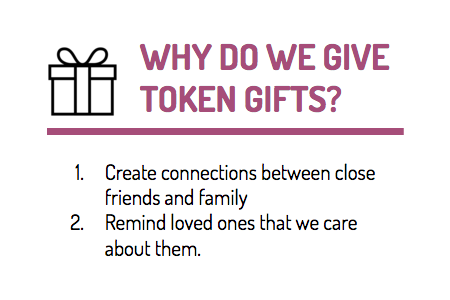
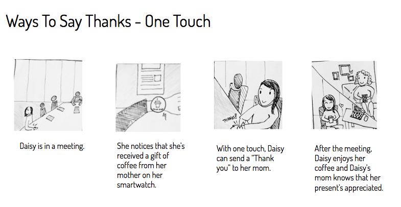
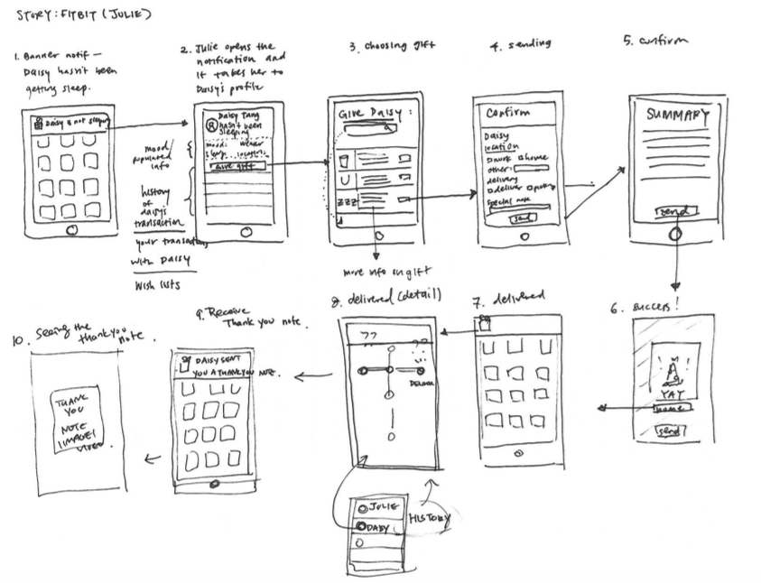
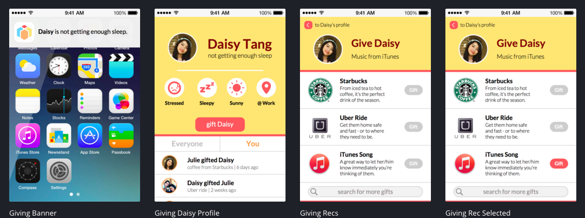

How do we let the people who we care about, who are both far away and close by, let them know that we’re thinking about them? The space of online gift-giving can seem distant and impersonal, but with the introduction of new technologies that are specifically available to phones, our team wanted to find a mobile solution that could utilize these existing capabilities to enhance the gift-giving experience.
I first created an ecosystem collection of various factors surrounding the culture, economic, and social connotations of gift-giving. We found common ideas among all of our diagrams, including an emphasis on instantaneous interactions (1) and contextual gifts that are based on social media (7).
 After iterating through several ideas, our team decided that we wanted to center a new mobile experience of gift-giving on contextual factors that impacted people on a day to day basis. Ideas for such contextual indicators included weather, stress levels/sleep levels, location, and activity. We explored use cases through two personas, and developed multiple scenarios in which these personas interacted with the app.
On the team, I designed an interface that would encourage spontaneity that reacted to the change of these contextual indicators. In wireframing and developing the flow of the usage of the app, we based it gift-giving off notifications, where gifters could receive important status updates about their friends and family and receive a list of recommended gifts.
UX/UI | Ps, Ai, Sketch, InVision
Fall 2015 | Interaction Design Fundamentals
Teammates: Raghav Anand, Nana Choi, Jae Won Kim